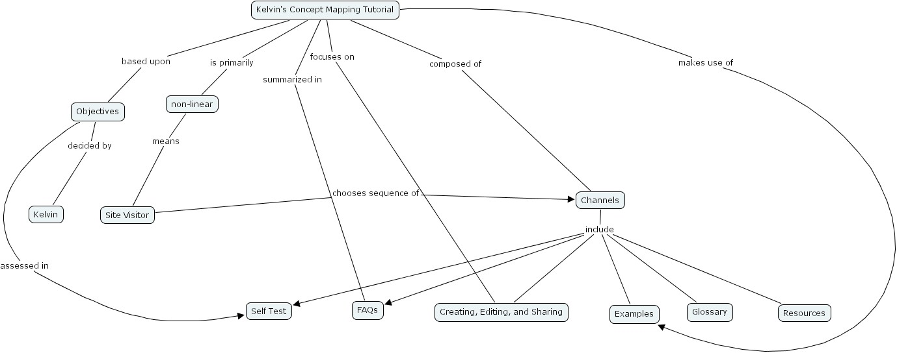

Warning:
JavaScript is turned OFF. None of the links on this page will work until it is reactivated.
If you need help turning JavaScript On, click here.
The Concept Map you are trying to access has information related to:
kelvin's concept mapping tutorial, kelvin, channels, kelvin's concept mapping tutorial, resources, glossary, creating, editing, and sharing, faqs, objectives, examples, non-linear, self test, site visitor
